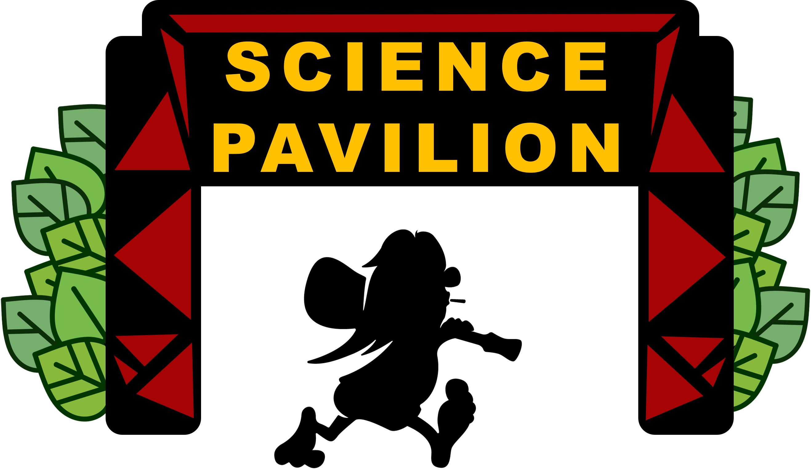

Alt det praktiske
Se alle detaljerne for frivillige⛺ Alle der kan, mødes tirsdag for at komme på plads i teltene, lærer hinanden at kende og lægge vagtplan.
👥 Tirsdag er alle ideelt samlet foran soveteltene kl. 17:00. Der er intromøde med vagtplan, så aftensmad og så lær-hinanden-at-kende ting
📢 Husk, at vi har morgenbriefing helt inde på pladsen onsdag kl. 10.00, men ellers ikke (antaget alt kører).
Generelt Program
Her er vagttider for alle dagene, som en god skitse. De generelle frivillige bliver delt ind i tre hold af ca. 5 (morgenhold, primetime, og aftenhold). 5 fysikshowere er "på" hverdag, og resten hjælper som generelle frivillige.
(Senest 19:30 lukkes der, det tager sjældent mere end 10 min. at lukke ned, da Jørgen er rar og gør det meste)
Frivillige
Se alle frivillige og rollerScience Pavilion drives af et engageret hold af frivillige, der gør oplevelsen mulig. Teamet består af i alt 25 frivillige, fordelt mellem et kerneteam, som står for planlægning og koordinering, et hold af generelle frivillige, der hjælper med drift og spændende science formidling, samt et fysikshow-team, der står for de spektakulære eksperimenter og indfanging af gæster foran teltet.
Evaluering
Der er evaluaring fredagen efter Smukfest i fysisk fredagsbar kl. 16.00. Resevér datoen på forhånd. I 2027 er det fredag den 13. august.
Kontaktinformation
Eventkoordinator: Kristian Dahlmann Oddershede
Email:kristian.dahlmann.oddershede@cern.ch
Telefon: +45 20 82 52 13